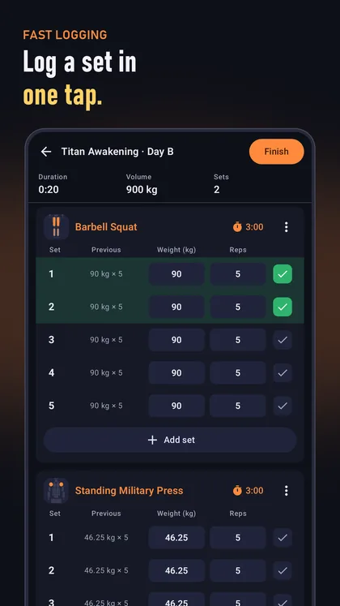
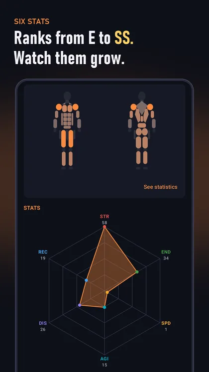
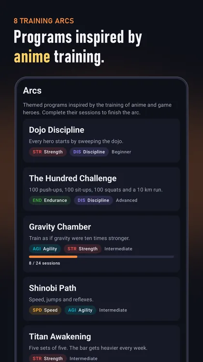
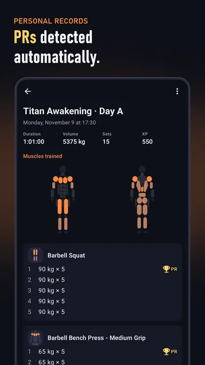
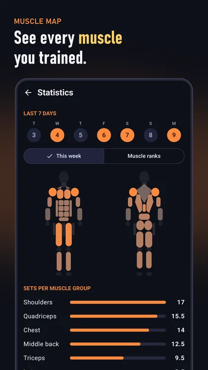

Training Arc
Tu registro de gimnasio, convertido en un RPG. Cada serie suma XP.
App Android para registrar entrenamientos en la que cada serie da XP, cada sesión sube seis atributos y cada semana seguida alimenta tu racha. Tiene 883 ejercicios, 8 programas temáticos, récords personales, mapa muscular y estadísticas. Funciona sin conexión y sin cuenta, en español e inglés.
- 883 ejercicios
- Rangos de E a SS
- Sin cuenta ni anuncios
- ES / EN
La app está en prueba cerrada en Google Play: escríbeme con tu cuenta de Google y te doy acceso.


✦ Lo que puedes hacer
Por qué te va a gustar Training Arc
Sube de nivel entrenando
Cada serie te da XP, cada entrenamiento sube tus atributos y cada semana seguida alimenta tu aura.
Registra una serie en un toque
Ves lo que hiciste la última vez y el descanso arranca solo. Te avisa aunque tengas el móvil bloqueado.

Seis atributos que crecen contigo
Fuerza, Resistencia, Velocidad, Agilidad, Disciplina y Recuperación, y un rango de E a SS para cada músculo.

8 arcos de entrenamiento
Programas temáticos inspirados en el entrenamiento del anime, cada uno con su progreso por sesiones.

Récords que se detectan solos
Al terminar, la app marca tus récords personales y te da XP extra. Gráficas de progreso, 1RM estimado y 14 logros.
Capturas de la versión 1.0 (ficha de Play en inglés)
desliza →
-
El héroe: nivel, racha y progreso semanal. -
Registro de series con los valores de la sesión anterior. -
Seis atributos en un radar y rango por músculo. -
Arcos: 8 programas temáticos con su progreso. -

Estadísticas semanales con mapa de calor muscular. -
Récords personales detectados al terminar.
¿Te apetece probar Training Arc?
La app está en prueba cerrada en Google Play: escríbeme con tu cuenta de Google y te doy acceso.
{ } Bajo el capó
Cómo está hecha
Para quien quiera saber qué hay detrás: el problema, la arquitectura, código real y las decisiones que tomé.
- ejercicios
- 883
- atributos RPG
- 6
- tests del dominio
- 34
01 El problema
Las apps de registro de entrenamientos son eficaces pero frías, y a mucha gente le cuesta mantener la constancia. Convertir el progreso en un personaje que sube de nivel da una razón más para volver al gimnasio.
02 Un fragmento del código
/**
* Turns training into XP, levels and stats. Everything is deterministic and pure, so the totals
* can always be rebuilt from the stored workouts.
*/
object RpgEngine {
// …
/** XP needed to go from [level] to the next one. */
fun xpToNextLevel(level: Int): Long = (100 * level.toDouble().pow(1.5)).roundToInt().toLong()
/**
* The reward for a finished workout.
* @param streakWeeks consecutive weeks with training before this workout.
* @param restedBefore whether there was at least one rest day since the previous workout.
*/
fun reward(
sets: List<SetForReward>,
heroClass: HeroClass?,
bodyweightKg: Double,
streakWeeks: Int,
restedBefore: Boolean,
): WorkoutReward {
val stats = Stat.entries.associateWith { 0.0 }.toMutableMap()
var xp = 0.0
sets.forEach { (profile, set, isPr) ->
var setXp = setXp(set, bodyweightKg)
if (setXp == 0.0) return@forEach
if (isPr) setXp *= PR_MULTIPLIER
val weights = statWeights(profile, set.reps)
val main = weights.maxBy { it.value }.key
if (heroClass != null && main in heroClass.focus) setXp *= heroClass.bonus
xp += setXp
weights.forEach { (stat, weight) -> stats[stat] = stats.getValue(stat) + setXp * weight / 10 }
}
if (xp == 0.0) return WorkoutReward(0, stats)
val streakMultiplier = 1 + 0.05 * streakWeeks.coerceIn(0, 4)
stats[Stat.DIS] = stats.getValue(Stat.DIS) + 3 + streakWeeks.coerceIn(0, 10) * 0.5
if (restedBefore) stats[Stat.REC] = stats.getValue(Stat.REC) + 2
val total = ((xp + COMPLETION_BONUS) * streakMultiplier).roundToInt()
return WorkoutReward(total, stats)
}
}
03 Qué he construido
- Kotlin y Jetpack Compose con una sola Activity, Navigation Compose, Room para entrenamientos y rutinas y DataStore para ajustes y héroe.
- Motor RPG en Kotlin puro y determinista: XP por serie según el tipo de ejercicio, bonus por récord, clase y racha, seis atributos y rangos de E a SS. Los totales se pueden reconstruir siempre desde los entrenamientos guardados.
- Entrenamiento en directo con los valores de la sesión anterior, tipos de serie y temporizador de descanso que sigue en la notificación con el móvil bloqueado.
- Récords personales detectados al terminar (1RM estimado con Epley), 14 logros, objetivo semanal, gráficas de progreso y peso corporal.
- Mapa muscular vectorial propio, de frente y de espaldas, usado en fichas, resultados y como mapa de calor semanal.
- 883 ejercicios de Free Exercise DB (dominio público) preparados con un script en Python, con instrucciones traducidas en el dispositivo con ML Kit.
- Sin backend ni cuentas: copia de seguridad exportable, imágenes sin conexión y borrado de caché y datos. El prototipo anterior en Flutter y FastAPI se conserva en una etiqueta.
- 34 tests unitarios del motor RPG, las rachas, los logros, el progreso, el catálogo y los formatos.
04 Decisiones y por qué
- El progreso se calcula, no se guarda. El motor RPG es una función pura, así que nivel y atributos se pueden reconstruir siempre desde los entrenamientos: un cambio en las reglas o un error nunca deja un progreso corrupto.
- Valores absurdos (600 kg, 500 repeticiones) se limitan en lugar de rechazarse. Una errata no debe hacer perder una serie, pero tampoco regalar niveles.
- Sin backend: el prototipo en Flutter y FastAPI se sustituyó por una app nativa que guarda todo en el móvil. Sin cuentas ni servidor no hay costes ni datos de salud fuera del dispositivo.
Transparencia: el estado indicado arriba refleja el roadmap del proyecto. El repositorio es privado porque la app está en Google Play; el fragmento de código es literal y puedo enseñar el resto en una entrevista.